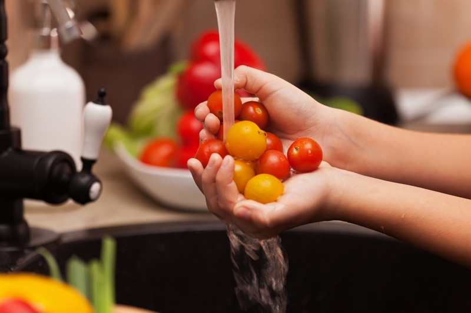

Washing Fruits and Vegetables
Eating a diet high in fruits and vegetables is one aspect of leading a healthy life. However, to make the most of these nutrient-filled foods, it’s equally important to make sure that the produce we consume is safe to eat. One way to do that is to make sure any of the fruits or vegetables you enjoy have been thoroughly washed before you peel, cut, eat, or cook with them. Pesticides, herbicides, and disease-causing bacteria may be naked to the human eye, but they are there.

To reduce your pesticide exposure, the obvious answer is to choose organic food when you can, but almost no food is 100% free of pesticides. Surprisingly, even organic produce may contain some pesticide residues either due to growing practices or overspray from other farmers. Always do your best in these cases. If money is tight and organic produce seems like such a hard reach, learn which fruits or veggies are on the Dirty Dozen list. If they are on that list, I HIGHLY encourage you to find a way to eat those only when organic, even if you have to opt for organic frozen.
Should you happen upon conventional fruits and veggies with thin skins such as zucchini, apples, plums, etc. be sure to wash and remove the skins before eating to reduce the intake of pesticides. If you don’t wash them first, you can transfer bacteria from the outside of the vegetable to the inside as you peel.
What to Wash Produce With
There are tons of “produce cleaners” on the market, do we need to use them? It’s very overwhelming if you are trying to get down to the nitty-gritty of it all. Many of you may already have a practice in place or a method that you feel comfortable using. For those of you who are unsure, there are methods don’t require special “produce cleaners.”
I have spent A LOT of time reading up on this very topic. Research has shown that most commercial produce cleaners are no more effective than plain water. Not mention that a lot of those cleansers are not FDA tested. We can liken this to our food labels, if you don’t know the ingredients used or can’t pronounce them, maybe stay away from them. You can read some studies that were done recommending water (here), (here), and (here). Below are some natural ways that you can also clean your produce.
Water
- Use cold or lukewarm water to wash produce. The temperature of the water should be similar to the temperature of the veggie.
- Use a scrub brush on produce that has thick skins or on fruits that have wax on them.
- For vegetables such as broccoli or cauliflower that have lots of crevices, soak for two minutes.
- If you’re concerned about the quality of your tap water, you can use distilled water.
Baking Soda
- For thick-skinned fruits and vegetables, sprinkle baking soda generously on your fruit/vegetable and scrub. Rinse under cold, running water until all traces of the baking soda are gone. You can use a veggie scrub brush on thicker skinned items.
- For leafy greens, you can sprinkle baking soda all over the leafy greens and let sit for about two minutes before lightly scrubbing and rinsing thoroughly, or you can add a teaspoon of baking soda to a clean sink of water and mix well. Soak greens for one minute and rinse thoroughly.
Vinegar and Water
- Mix one part vinegar with three parts water.
- For smooth-skinned produce, combine the vinegar and water in a spray bottle, mist the fruit or vegetable, thoroughly coating its exterior with the solution. Allow the produce to rest for thirty seconds before rubbing its surface and rinsing it under cold, running water.
- For rough or hard produce such as broccoli, cauliflower, leafy greens, melons, and potatoes, soak in one part vinegar with three parts water mixture. Soaking ensures the acidic blend kills all bacteria. After they are done soaking, scrub the vegetables with a brush (except leafy veggies) and rinse under running water.
Salt Water
- Add one teaspoon of sea salt for every cup of water used to fill the container or sink. Stir the mixture before adding the produce.
- Place all fruits and vegetables in the sink or container and let them soak for at least two minutes. A vegetable scrub can be used to remove pesticides further with a gentle brushing.
- Rinse the vegetables with fresh water.
Before you Start – Inspect the Produce
- As you go to wash your produce make sure that it is free of bruises, mold, or other signs of damage.
- Use a sharp paring knife to remove any damaged or bruised areas. Even if you are going to eat fruits with peels on them, be sure to wash the produce before you peel it. That way, contaminants won’t be transferred from your knife to the fruit or vegetable.
How to Wash Firm Produce
- For firm produce, such as melons and winter squash, use a clean vegetable brush to scrub the surface as you rinse it.
- Veggies with bumpy, uneven surfaces, such as cauliflower and broccoli, should be soaked for one to two minutes in cold water to remove contaminants from the nooks and crannies.
Greens require special and delicate attention. Start by removing any wilted leaves; then prep and wash greens as directed for each type.
- For leafy lettuces, such as green or red-tip leaf, butterhead, and romaine as well as endive, remove and discard the root end. Separate leaves and hold them under cold running water to remove any dirt.
- For smaller greens, such as spinach and arugula, swirl them in a bowl or a clean sink filled with cold water for about thirty seconds. Remove the leaves and place in a salad spinner to remove as much water as possible. If you don’t have one, shake the greens gently to let dirt and other debris fall into the water. Repeat the process if necessary. Drain in a colander.
- For iceberg lettuce, remove the core by hitting the stem end on the countertop; twist and lift out the core. (Do not use a knife to cut out the core, as this can cause the lettuce to turn brown). Hold the head, core side up under cold, running water, pulling leaves apart slightly. Invert the head and drain thoroughly. Repeat if necessary.
- For mesclun (a mixture of young, small salad greens often available in bulk at farmer’s markets), rinse in a colander or the basket of a salad spinner.
How to Clean Mushrooms
- For all mushrooms (morels – see below), wipe one at a time with a damp paper towel or a soft mushroom brush to remove any dirt. You can lightly rinse the mushrooms with cool water and pat dry with paper towels, but do not soak the mushrooms. They absorb water like little sponges.
- For morels, cut a thin slice off the bottom of each stem and, if desired, cut the mushrooms in half from stem to tip. Rinse with cool water to remove any dirt and insects. If the mushrooms look clean, this may be enough; if not, a short soak in lightly salted water brings out any remaining insects and dirt. If soaking, change the water as needed until the dirt and debris are removed. Rinse the morels thoroughly and pat dry.
Berries
- Berries shouldn’t be rinsed until you are ready to enjoy them. Once ready, run them under cold water in a mesh strainer, then gently pat dry with a clean kitchen towel or a paper towel.
- If you wash then store them, it increases moisture and accelerates spoilage, microflora, and mold.
© AmieSue.com